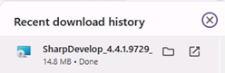
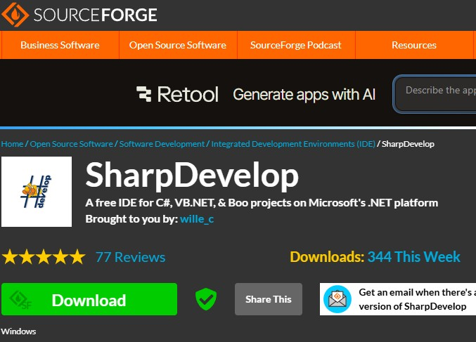
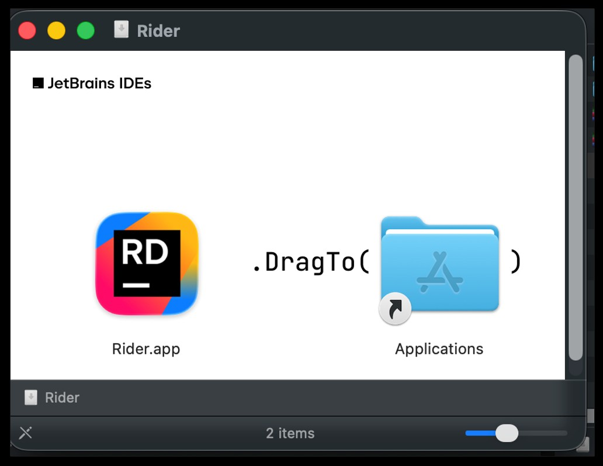
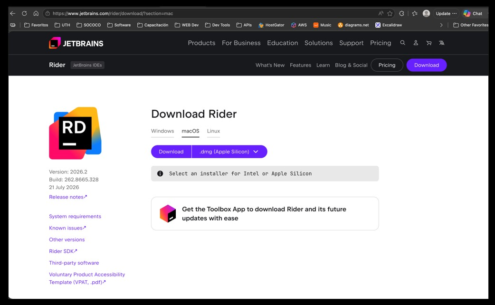
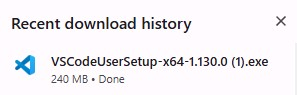
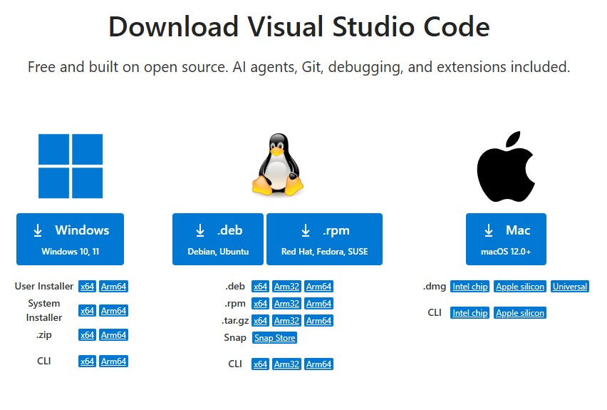

Requisitos Previos del Sistema
SharpDevelop
• Windows: Windows XP, Vista, 7, 8 o superiores compatibles con .NET Framework.
• Memoria RAM: 512 MB mínimo, 1 GB o más recomendado.
• Espacio en disco: Necesita aproximadamente 8.7 MB de espacio en disco para la instalación básica.
• Requisitos del sistema: .NET Framework 1.1, 2.0, 3.5 o superior según la versión utilizada.
• Acceso a datos: Se recomienda tener instalado MSDE (Microsoft SQL Server Desktop Engine) o SQL Server para proyectos que requieran conexión a bases de datos.
• Lenguajes compatibles: C#, VB.NET, Boo e IronPython.
JetBrains
• Windows: 64 bit, .NET Framework 4.7.2+, 8 GB RAM mínimo
• macOS: macOS 12+, Intel o Apple Silicon
• Linux: Ubuntu, Debian, Fedora o similares
• Windows: Windows 10/11 (64 bits), 4 GB RAM recomendado, .NET SDK 8.0 o superior para desarrollo en C#.
• macOS: macOS 10.15 o superior, Intel o Apple Silicon, .NET SDK 8.0 o superior.
• Linux: Ubuntu, Debian, Fedora o distribuciones compatibles (64 bits), .NET SDK 8.0 o superior.
• Espacio en disco: Aproximadamente 500 MB para VS Code y espacio adicional para extensiones y SDKs.
Paso 1: Descarga de la Fuente Oficial
SharpDevelop (version 4.4.1.9729)
No cuenta con un sitio web oficial activo propio, ya que el proyecto está descontinuado, pero sus archivos y código fuente oficiales se distribuyen a través de SharpDevelop en SourceForge y el repositorio de SharpDevelop en GitHub. Su última versión estable fue lanzada el 14 de abril de 2016


JetBrains (version 2026.2)
sitio web oficial activoJetBrains Download


Visual Studio Code (Version 1.130)
sitio web oficial activoVisual Studio Code Download

